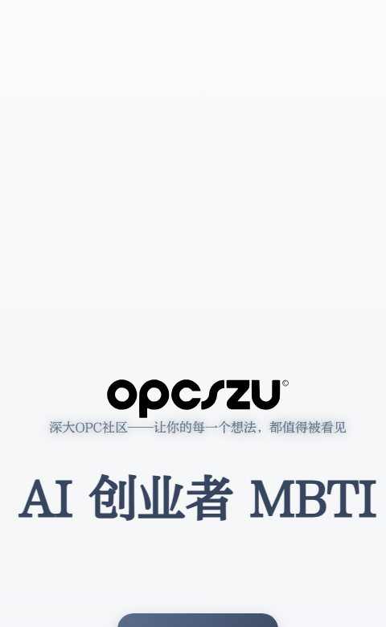
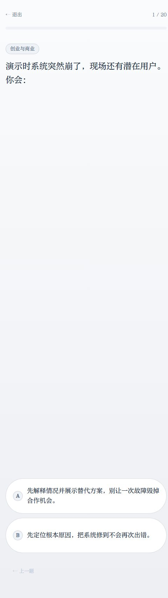
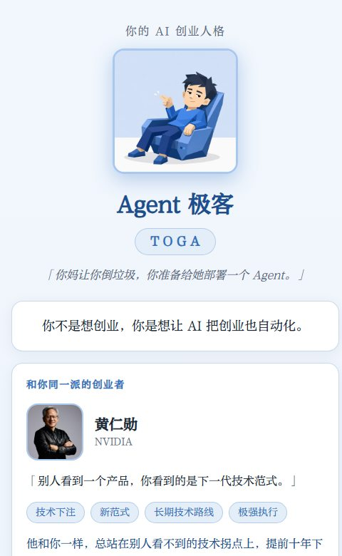
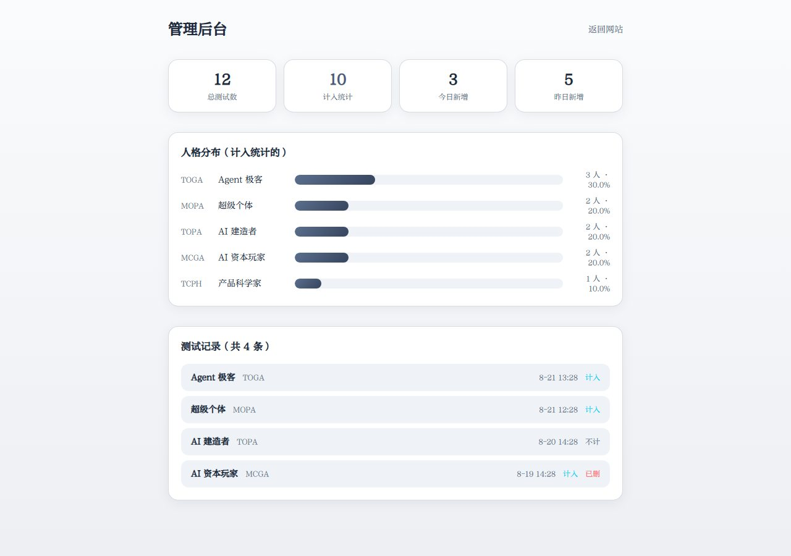

01
AI 创业者 MBTI · 在线测评站
已上线运营解决的问题：面向 AI 从业者和创业者的人格测评——回答 40 道二选一题目，得到一个四字母人格代码和对应的中文身份。
- 40 题题库 + 随机抽题 + 场景多样性约束 + A/B 随机化
- 评分引擎：四字母、倾向值、第二人格、搭子、宿敌、标签
- Canvas 合成分享图（内嵌二维码），可直接转发
- 后端：结果提交含 24 小时去重与 IP 限流、设备指纹绑定、匿名后台看板
- 我的角色：产品定义、文案验收标准与上线，全站文案由 AI 生成、我逐条定稿，代码与 AI 合作完成



